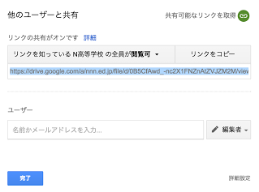
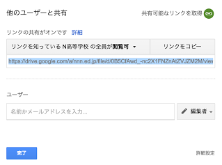

「N高 動くWebページコンテスト 2017夏」は、N予備校プログラミング入門コースで学んだN高校生が、 HTML/CSS/JavaScriptの技術を使って動きのあるWebページの制作を行い競うコンテストです。
参加資格
- N予備校 または N高課外授業 にて プログラミングのいずれかのコースを受講中であること
応募規定
- テーマは「高校」であり、そのテーマに沿っている必要がある
- HTML/CSS/JavaScriptで作成された動くWebページを制作し提出すること（他のプログラミング言語から変換したものは不可）
- 作品はGoogle Chromeブラウザで、 index.html をファイルを開くことによって確認できること
- 外部ライブラリ (jQuery, Processing.js, anime.js, Pixi.js など) が利用されていないこと
- 著作権上問題のないメディアファイル、ソースコードのみで構成されていること
- 提出はプロジェクトフォルダをzip圧縮したファイルを提出し、全体のサイズが100MB以内となること
- 良い作品は公開される可能性があるため、それに了承できること
賞
- N高最優秀賞
- 賞品:PFU Happy Hacking Keyboard の Professional 2 または Professional JP のいずれか
- N高優秀賞
- 賞品:Raspberry Pi 3 Model B
- N高健闘賞
- N予備校最優秀賞
応募期間
- 2017年7月3日の第23回授業内で投稿フォームのURLを公開
- 2017年7月3日から2017年8月17日の間、応募フォームより応募可能
応募形式
授業内で公開されたGoogleフォームのURLより、投稿作品がまとめられたzipファイルのGoogleドライブの「共有リンク」「作品名」「作品の説明」「プログラミングを始めた時期」を記入し投稿する。締め切り日までは編集可能。
結果発表
2017年9月4日の授業と本サイトにて発表
評価項目
- コーディング技術 (40点)
- 完成度 (30点)
- アイデア (30点)
- 創意工夫や発想、テーマにあっているか、着眼点の良さを評価します
作品例
- 英単語テストシステム、漢字検定クイズ
- 歴史人物当てクイズ
- 学内掲示板
審査員
- ドワンゴエンジニア koizuka さん
- ドワンゴエンジニア meso さん
- プログラミング講師陣
Googleドライブの共有リンクの取得方法
https://www.google.com/intl/ja_jp/drive/ から 「Google ドライブにアクセス」ボタンをクリックします。 ドライブにはドラッグ＆ドロップでzipファイルを保存することができます。
ドライブにはドラッグ＆ドロップでzipファイルを保存することができます。
その後、そのファイルを右クリックして、メニューから「共有」をクリックします。 そこから共有可能なリンクを取得とかかればテキストの右側のボタンをクリックすることで、共有リンクを取得することができます。この共有リンクのURLを応募フォームに入力ください。
そこから共有可能なリンクを取得とかかればテキストの右側のボタンをクリックすることで、共有リンクを取得することができます。この共有リンクのURLを応募フォームに入力ください。
応募フォーム
https://docs.google.com/a/nnn.ed.jp/forms/d/e/1FAIpQLSeEmTlU759179grZskThgBuiYPN44pPcfE90CwDvTcwEwQeHw/viewform